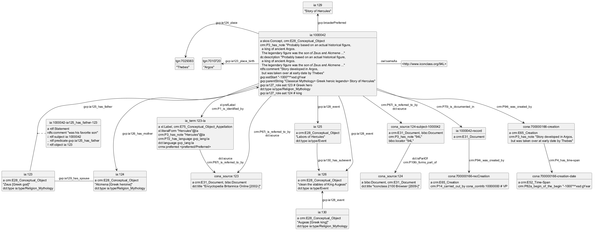

@startuml
hide empty methods
hide empty attributes
hide circle
skinparam classAttributeIconSize 0
class ia_1000042_ia125_has_father_123 as "ia:1000042-ia125_has_father-123"
ia_1000042_ia125_has_father_123 : a rdf:Statement
ia_1000042_ia125_has_father_123 : rdfs:comment "was his favorite son"
class cona_700000166_recCreation as "cona:700000166-recCreation"
cona_700000166_recCreation : a crm:E65_Creation
cona_700000166_recCreation : crm:P14_carried_out_by cona_contrib:10000000 # VP
class ia_1000042 as "ia:1000042"
ia_1000042 : a skos:Concept, crm:E28_Conceptual_Object
class ia_124 as "ia:124"
ia_1000042 -up-> ia_124 : gvp:ia126_has_mother
class _http___www_iconclass_org_94L_ as "<http://www.iconclass.org/94L>"
ia_1000042 -right- _http___www_iconclass_org_94L_ : owl:sameAs
class ia_term_123_la as "ia_term:123-la"
ia_1000042 --> ia_term_123_la : xl:prefLabel\ncrm:P1_is_identified_by
class ia_126 as "ia:126"
ia_1000042 --> ia_126 : gvp:ia128_event
class cona_source_123 as "cona_source:123"
ia_1000042 --> cona_source_123 : crm:P67i_is_referred_to_by\ndct:source
class cona_source_124_subject_1000042 as "cona_source:124-subject-1000042"
ia_1000042 --> cona_source_124_subject_1000042 : crm:P67i_is_referred_to_by\ndct:source
class tgn_7010720 as "tgn:7010720"
ia_1000042 -left-> tgn_7010720 : gvp:ia123_place_birth
class ia_129 as "ia:129"
ia_1000042 -up-> ia_129 : gvp:broaderPreferred
class ia_1000042_record as "ia:1000042-record"
ia_1000042 --> ia_1000042_record : crm:P70i_is_documented_in
class ia_123 as "ia:123"
ia_1000042 -up-> ia_123 : gvp:ia125_has_father
class ia_125 as "ia:125"
ia_1000042 --> ia_125 : gvp:ia128_event
class tgn_7029383 as "tgn:7029383"
ia_1000042 -left-> tgn_7029383 : gvp:ia124_place
class cona_700000166_creation as "cona:700000166-creation"
ia_1000042 --> cona_700000166_creation : crm:P94i_was_created_by
ia_1000042 : crm:P3_has_note "Probably based on an actual historical figure,\n a king of ancient Argos.\n The legendary figure was the son of Zeus and Alcmene ..."
ia_1000042 : dc:description "Probably based on an actual historical figure,\n a king of ancient Argos.\n The legendary figure was the son of Zeus and Alcmene ..."
ia_1000042 : rdfs:comment "Story developed in Argos,\n but was taken over at early date by Thebes"
ia_1000042 : gvp:estStart "-1000"^^xsd:gYear
ia_1000042 : gvp:parentString "Classical Mythology> Greek heroic legends> Story of Hercules"
ia_1000042 : gvp:ia127_role aat:123 # Greek hero
ia_1000042 : dct:type ia:type/Religion_Mythology
ia_1000042 : gvp:ia127_role aat:124 # king
ia_126 : a crm:E28_Conceptual_Object
ia_126 : "clean the stables of King Augeas"
ia_126 : dct:type ia:type/Event
cona_source_123 : a crm:E31_Document, bibo:Document
cona_source_123 : dct:title "Encyclopedia Britannica Online [2002-]"
ia_129 : "Story of Hercules"
class ia_130 as "ia:130"
ia_130 : a crm:E28_Conceptual_Object
ia_130 -up-> ia_126 : gvp:ia128_event
ia_130 : "Augeas [Greek king]"
ia_130 : dct:type ia:type/Religion_Mythology
ia_125 : a crm:E28_Conceptual_Object
ia_125 --> ia_126 : gvp:ia130_has_subevent
ia_125 : "Labors of Hercules"
ia_125 : dct:type ia:type/Event
ia_124 : a crm:E28_Conceptual_Object
ia_124 : "Alcmena [Greek heroine]"
ia_124 : dct:type ia:type/Religion_Mythology
ia_term_123_la : a xl:Label, crm:E75_Conceptual_Object_Appellation
ia_term_123_la --> cona_source_123 : dct:source\ncrm:P67i_is_referred_to_by
ia_term_123_la : xl:literalForm "Hercules"@la
ia_term_123_la : crm:P3_has_note "Hercules"@la
ia_term_123_la : crm:P72_has_language gvp_lang:la
ia_term_123_la : dct:language gvp_lang:la
ia_term_123_la : crmx:preferred <preferred/Preferred>
cona_source_124_subject_1000042 : a crm:E31_Document, bibo:Document
class cona_source_124 as "cona_source:124"
cona_source_124_subject_1000042 --> cona_source_124 : dct:isPartOf\ncrm:P106i_forms_part_of
cona_source_124_subject_1000042 : crm:P3_has_note "94L"
cona_source_124_subject_1000042 : bibo:locator "94L"
tgn_7010720 : "Argos"
ia_123 : a crm:E28_Conceptual_Object
ia_123 -right- ia_124 : gvp:ia129_has_spouse
ia_123 : "Zeus [Greek god]"
ia_123 : dct:type ia:type/Religion_Mythology
ia_1000042_record : a crm:E31_Document
ia_1000042_record --> cona_700000166_recCreation : crm:P94i_was_created_by
cona_700000166_creation : a crm:E65_Creation
class cona_700000166_creation_date as "cona:700000166-creation-date"
cona_700000166_creation --> cona_700000166_creation_date : crm:P4_has_time-span
cona_700000166_creation : crm:P3_has_note "Story developed in Argos,\n but was taken over at early date by Thebes"
tgn_7029383 : "Thebes"
cona_700000166_creation_date : a crm:E52_Time-Span
cona_700000166_creation_date : crm:P82a_begin_of_the_begin "-1000"^^xsd:gYear
cona_source_124 : a bibo:Document, crm:E31_Document
cona_source_124 : dct:title "Iconclass 2100 Browser [2009-]"
ia_1000042_ia125_has_father_123 : ↓ rdf:subject ia:1000042
ia_1000042_ia125_has_father_123 : .. rdf:predicate gvp:ia125_has_father
ia_1000042_ia125_has_father_123 : ↑ rdf:object ia:123
(ia_123, ia_1000042) . ia_1000042_ia125_has_father_123
@enduml